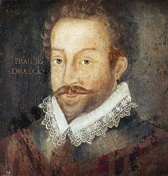
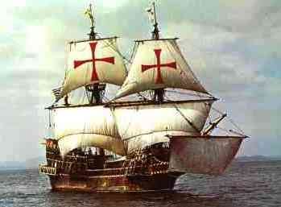
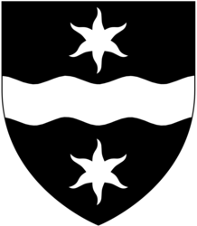

Francis Drake

Sir Francis Drake was the first English captain to circumnavigate the globe on a famous voyage that lasted from 1577 to 1580.
Partly sponsored by Queen Elizabeth 1, the objective of Drakes voyage was to intercept the gold and jewels that the Spanish were removing from South America and shipping back to Spain across the Isthmus of Panama.
Drake was successful in capturing 26 tons of silver, 1/2 ton of gold, thousands of coins, pieces of jewellery and jewels.
This made Drake a hero to the English, but the Spanish considered him to be a pirate!

Francis Drake's Pirate Ship, "Golden Hind"

Francis Drake's Pirate Flag